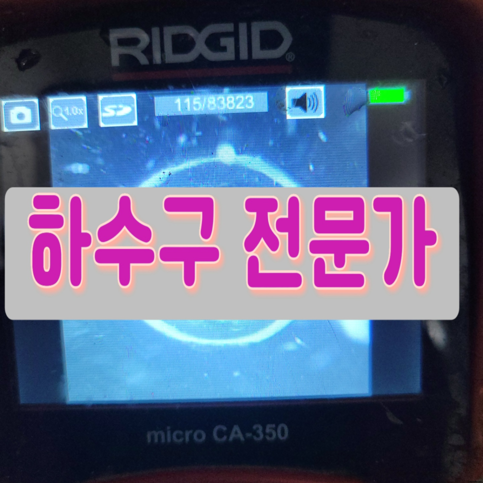
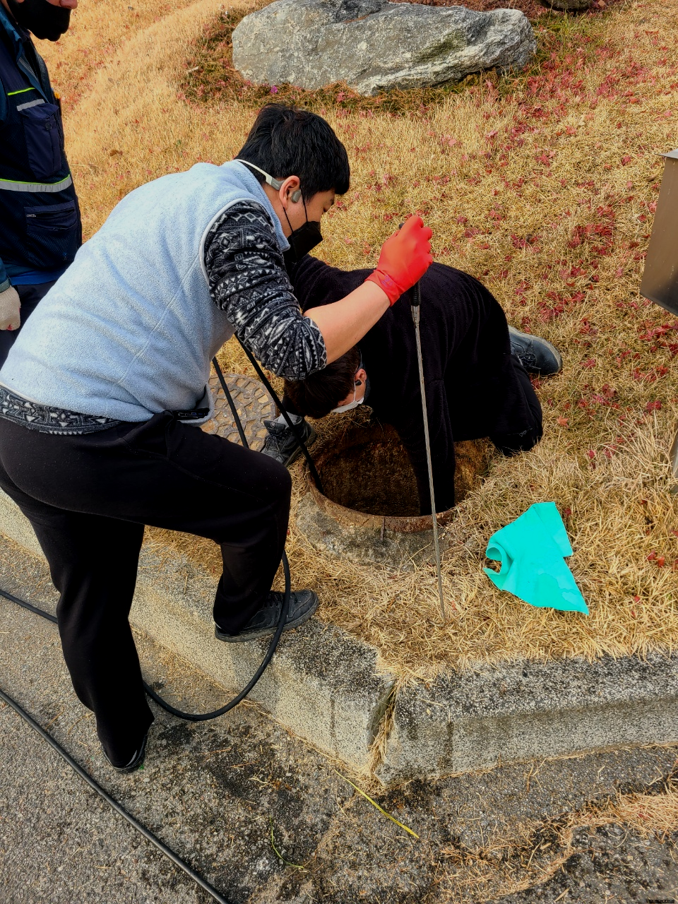
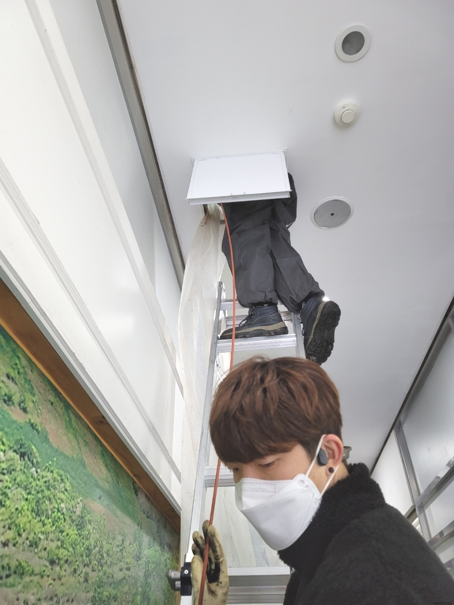
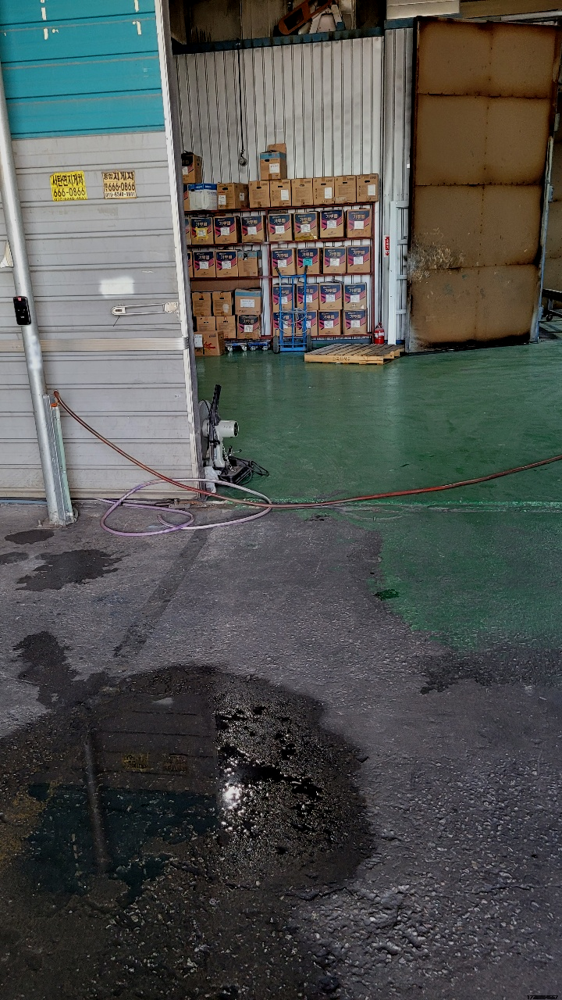
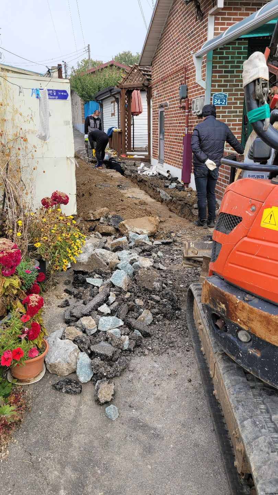
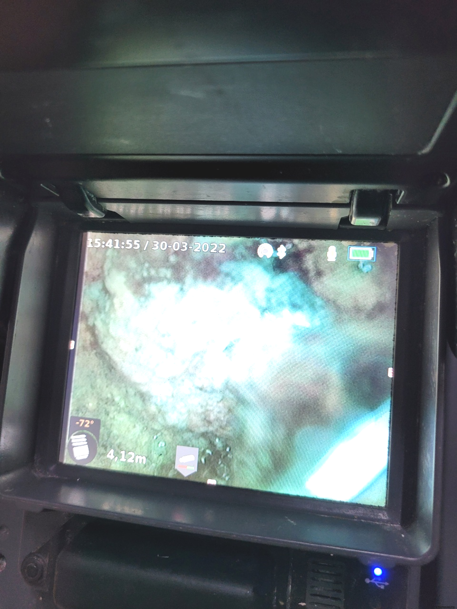
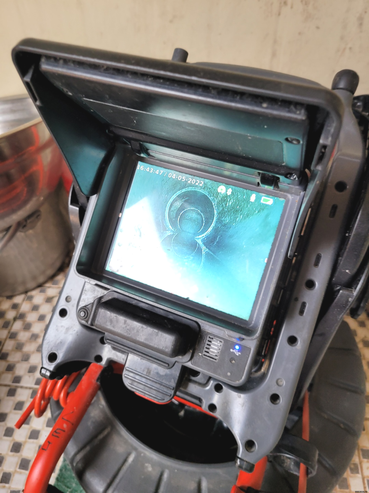

🏠 화성 정남 하수구맨홀 역류 향남 고압세척 하수구뚫는곳
화성 향남 하수구막힘 전문 시공 후기

📋 작업 개요
- 위치: 화성 향남, 향남, 화성
- 서비스 유형: 하수구막힘, 배관막힘, 맨홀막힘, 누수수리, 역류해결, 뚫는업체, 배관청소, 고압세척, 설비공사
- 작업 일시: 2023. 9. 11. 0:34
- 업체명: 하수구수사대 (010-5615-2118)
🔍 문제 상황
모든 사람들이 살아가는 공간과 환경은 비슷비슷하겠지만 배수구배관의 위치나 모양,크기는 모두 다른 모습을 보이고 있습니다.
가시적으로 확인이 되는 이물질로 인하여 배수구막힘 것이라면 그 부분만 수리하면 처리될수 있겠지만 눈에 보이지 않는곳에서 이물질로 인해 막힘 현상이 발생하면 재빨리 세제물을 풀어넣어보고 뚫어뻥으로 뚫어봐도 수습이 되지 않는 경우도 많습니다.
화성 정남 하수구맨홀 역류 향남 고압세척 하수구뚫는곳
단순 막힘 말고도 역류 같은 문제처럼 배출구에는 생길 수있는 증상들은 매우 많습니다. 그럴 때 전문 업체를 통해 뚫기도 하지만 저렴한 곳만 알아보시는 것은 오히려 나중에 더 큰 피해를 커울수 있다는 것을 말씀 드리고 싶습니다.

🔎 원인 분석
💡 전문가 진단: 화성 정남 하수구맨홀 역류 향남 고압세척 하수구뚫는곳
배출구 아주 깊숙이 설계되어 있어서 육안으로만 판단하기에는 매우 어려운 점이 있습니다. 막힘의 상황에 문제 지점을 진단하고 제거하기 위해서는 반드시 장비가 필요합니다. 그렇기에 배관 내시경을 필히 준비되어 있어야 합니다.
하수 내부에 어느 정도 이물질이 쌓여있는지 확인하기 위해서는 내시경 카메라를 넣고 원인을 파악하는데요. 기름 슬러지가 원인이 되어 막혔다면 내시경 카메라가 뿌옇게 보이기 때문에 일단 석션 장비로 통수 작업을 시켜준 뒤에 내시경을 다시 넣게 됩니다.
보통 이상의 배출구막힘은 결국 뚫어내지도 못하고 실패한 현장으로 남게 됩니다. 이런 업체는 출장비도 받을 확률이 크기 때문에 괜히 한 푼을 아끼려다가 아까운 돈만 지불해야 할 경우가 생기게 됩니다.
이럼으로 인해 배수구장비를 얼마나 갖추고 있는지 면밀히 알아보세요. 점성이 있는 기름때들은 소량일지라도 하수관 안에 남겨두게 되면 쌓이기 시작해서 소량이었던 것이 증식해 버리게 되어 틀어막게 되는 것인데요.
배출구막힘을 해결하기 위해서는 여러가지 장비가 동원이 되어야 하고 그러한 장비를 사용하는 기술자의 기술 역시도 매우 중요한 부분입니다.최근에 하수구 뚫음 업체가 많이 생겨나고 있어 어떠한 업체에 맡기느냐도 중요한 부분인데요.

🔧 작업 과정
한번의 고압세척만으로도 일반 가정집 경우 몇년간은 시원한 화성 향남 하수구막힘뚫음으로 막힘 걱정없이 안전하고 쾌적한 생활이 가능하십니다.
막힌 상태에서 물을 계속 사용하면 오히려 하수역류가 되어 밑에층까지 누수가 되는 일이 생길수 있으니 조심하여야 해요. 일단 물이 고여있기 때문에 셕션장비로 정리를 하고 시작을 합니다.
그런데다가 이같은상황에서는 증식되는 기름때로인해 누수증상도 생겨버려 이웃집에 영향까지 끼쳐버리게되는데요.이럴때에는 하수뚫음은 뒷전이고 피해까지 메꿔줘야하기때문에 고객님의 부담만 늘어나버리게됩니다.
이것만으로 끝나는게아닌 방치했을때는 다른세대에 안좋은영향을 주기때문에 유의하셔야하는데요. 배출구막힘 의뢰자분만 고치신다면 상관없겠지만 이와같은것이 생기게되면 타격주신것을 변상해야되기에 큰피해를입으실텐데요.
배수구막힘 건축물바깥에 배출되지않고 집안쪽에 누수가발생되기에 장판을상하게하면서 아랫세대쪽에도 문제가발생됩니다,다같이이용하는 공동하수관이면 같은건물사람들이 사용하지못하기에 모든부분에서 손해가발생돼요.
그런데상황이 악화되었을때는 셀프로뚫으시는건 사고가날수있습니다.간단하게 사는 저렴한 배수구 청소기들을 무작정넣게되면 뚫리지않고 안쪽에있는게 서로덩어리져서 심화되게됩니다.
작업 후 하수배관이 빈 것을 보면서 확인이 가능하지만 물이 잘 내려가는지 확인을 위해 통수를 해서 잘 빠지는지, 역류나 물이 차오르지는 않는지 이중 삼중의 확인이 필요합니다.


✅ 작업 완료
배관 내부는 우리가 생각하는 것 이상으로 많은 변수에 노출되어 있습니다. 가장 대표적인 예가 하수배관 손상인데요. 워낙 길게 매립되어 있는 데다 주변 공사, 충격 등에 의해일부가 무너져 내린다던 자 손상될 확률은 얼마든지 있습니다.
어딜 가더라도 미리 정해놓은 비용으로 일하는 곳도 많습니다. 아마 이런 업체에서는 강도 있는 진행이 절실한 상황이더라도 나 몰라라 하고 비용안에서만 작업을 대충 때워버릴 것입니다.




⚠️ 베란다 누수 및 방수 관리 방법
- ✅ 비가 많이 올 때 창틀 주변이나 아래층 천장에 얼룩이 생기는지 정기적으로 확인해 보세요.
- ✅ 우수관 주변 실리콘 마감이 들뜨거나 깨진 틈새가 있는지 손상 여부를 수시로 체크하세요.
- ✅ 베란다 바닥 타일의 줄눈(메지)이 소실되면 그 틈으로 물이 침투하여 누수가 유발됩니다.
- ✅ 누수 의심 증상 발견 시 방치하면 아래층 손실이 커지므로 즉시 전문가의 진단을 받으십시오.
💡 핵심 정리
- 확실한 장비 작업(내시경 점검 및 샤프트 스케일링)으로 원인을 뿌리 뽑습니다.
- 작업 후 1년 이내에 동일한 부위 재발 시 100% 무상 A/S 서비스를 보장합니다.
- 서울 · 경기 · 인천 전 지역에 24시간 언제든 긴급 출동할 수 있도록 항시 대기 중입니다.
❓ 자주 묻는 질문 (FAQ)
🚨 화성 향남 하수구막힘 문제로 고민이신가요?
정확한 원인 진단과 확실한 시공으로 재발 없는 해결을 약속드립니다.
24시간 긴급 출동 | 서울 · 경기 · 인천 전지역 | 1년 내 재발 시 무상 A/S